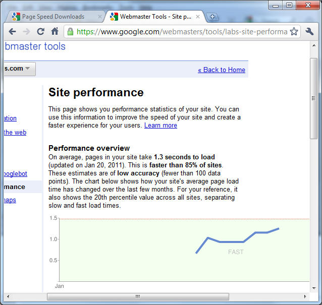
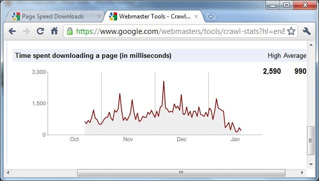

During the design and development of Quartz for ASP.NET and Orion, performance was an extremely important area I focused on. Optimizing a framework such as Quartz for ASP.NET is important because other websites and application will be built using it and I believe it is imperative that frameworks pay close attention to performance. The same goes for Orion but of course at a different level since Orion is a web application.
I should add that Quartz for ASP.NET does not sacrifice maintainability for performance however, there are many aspects of the design of the framework that lend themselves towards mind-bending performance. And of course code constructs.
Anyway, this post is about the fastest website on the planet and you should know, you're on it! Yes, Matlus is currently the fastest website ranked by http://www.showslow.com/. Matlus has the following score:
YSlow – Grade A
PageSpeed – 99/100
If it weren't for the Google analytics JavaScript file not being cached, PageSpeed would have given it a 100/100!
In Google Webmaster tools under "Labs" there is a Site Performance link and this is what I see there

Under the "Diagnostics" section, the "Crawl stats" shows me this. It so happens that I moved my blog from using WordPress as the blog engine to using Orion. So if you look at the January portion of the graph that takes a big dip towards the end, that's when the switch happened.
